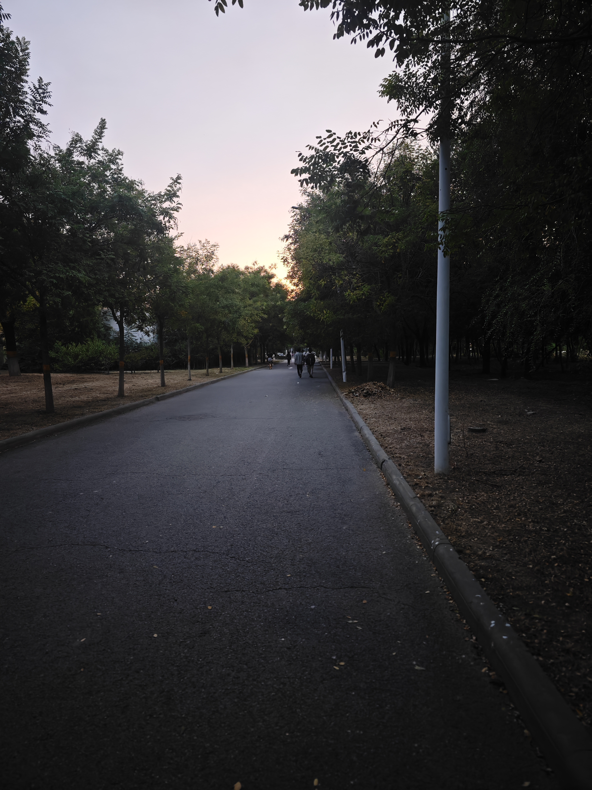

角落
青木下黄土旧叶，落日里长路新人。

2023年9月28日
天下第一洞
当初无意间拍到的，后来每每一看
真的绝了
2023年9月29日
无耻之徒
这部美剧真的太绝了
在第四季的最后，这一幕，真的物是人非。
从一开始的不理解，以及各种各样的奇葩
到最后的窥探出，这部剧到底想表达出什么
以及不同的观众生活在不同的环境中他们能够获得什么
这似乎是人活一生，每个人都会思考的各种问题

2023年11月2日
别怪过去的自己，当时自己也站在迷茫中
余幼时家贫
但仍不知上进
贪玩误学
缺乏志向
偶寄情于山水之间
纵情于男欢女爱
蹉跎人生二十有余
往后更甚之
高堂苦口劝诫数载
不胜其烦，也惧辍学
所幸光阴长久久
日益渐长
竟喜于阅序观文
提笔苦于胸中无半分墨水
难书锦绣文章
恐数年回首
疲于多年八分谋业
东奔西跑
青春年华已然而逝
然竟开始每日三省吾身
日日夜夜不得始终
不免心中几分自怜
2024年2月16日13点09分
《人世间》观后感
穷不怪父
孝不比兄
苦不责妻
气不凶子
一生向阳
2024年3月6日22点44分